Bikeraum
Ihr eigenes Fahrrad ist mit dabei? Im Lahnerhof steht unseren Gästen ein eigener Bikeraum zur Verfügung.
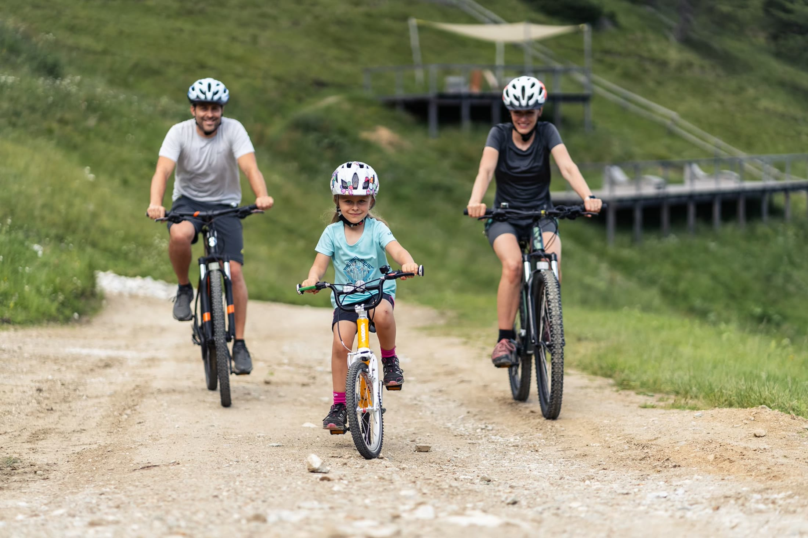
Das Hotel Lahnerhof oberhalb von Sterzing ist der ideale Ausgangspunkt für einen abwechslungsreichen Bikeurlaub in Südtirol. Hier treffen alpine Bergtouren auf gemütliche Radwege, anspruchsvolle Anstiege auf aussichtsreiche Almen und sportliche Tage auf echte Südtiroler Genussmomente.
Ob Mountainbike, E-Bike, Gravelbike oder Rennrad: Rund um Sterzing findet jeder seine persönliche Lieblingsroute. Mountainbiker zieht es auf Forst- und Bergwege rund um Rosskopf, Ratschings, Ridnaun und Pfitsch. Rennrad- und Gravel-Fans können vom Brenner aus Richtung Süden rollen oder über bekannte Alpenpässe Höhenmeter sammeln. Familien entdecken das Wipptal auf entspannten Radwegen.
Und danach? Bike sicher im Bikeraum abstellen, in den beheizten Außenpool springen und den Tag bei einem 4-Gänge-Genussmenü ausklingen lassen.
„Vom Brenner Richtung Süden, hinauf auf die Alm oder ganz entspannt durchs Tal: Rund um Sterzing zeigt sich Südtirol auf zwei Rädern von seiner schönsten Seite.“
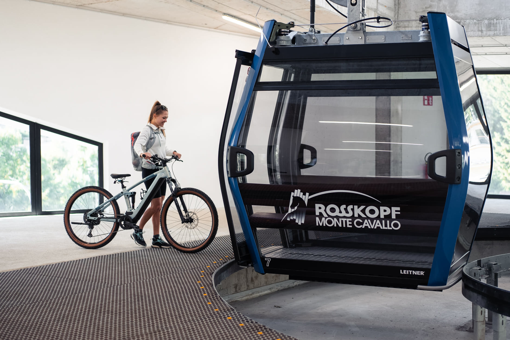
Ihr eigenes Fahrrad ist mit dabei? Im Lahnerhof steht unseren Gästen ein eigener Bikeraum zur Verfügung.
Wer ohne eigenes Bike anreist, kann direkt im Lahnerhof E-Bikes gegen Aufpreis ausleihen und zur Tour starten.
Gemeinsam mit Gastgeber Gerhard geht es einmal wöchentlich auf ausgewählte E-Bike-Touren rund um Sterzing und durch das Wipptal.
Zusätzliche Fahrräder und Ausrüstung können bei verschiedenen Bike-Shops und Verleihstationen in Sterzing ausgeliehen werden.
Nach den Kilometern kommt die Erholung: beheizter Außenpool, Sauna und Ruheraum mit Blick auf die Südtiroler Bergwelt.
Reichhaltiges Frühstück am Morgen und 4-Gänge-Genussmenü am Abend: die passende Stärkung für aktive Urlaubstage.
Sterzing liegt genau dort, wo unterschiedliche Bike-Welten zusammentreffen. Alpine Berge, ruhige Seitentäler, bekannte Passstraßen und die Nord-Süd-Radroute durch das Eisacktal machen die Region zu einem außergewöhnlich vielseitigen Ausgangspunkt.
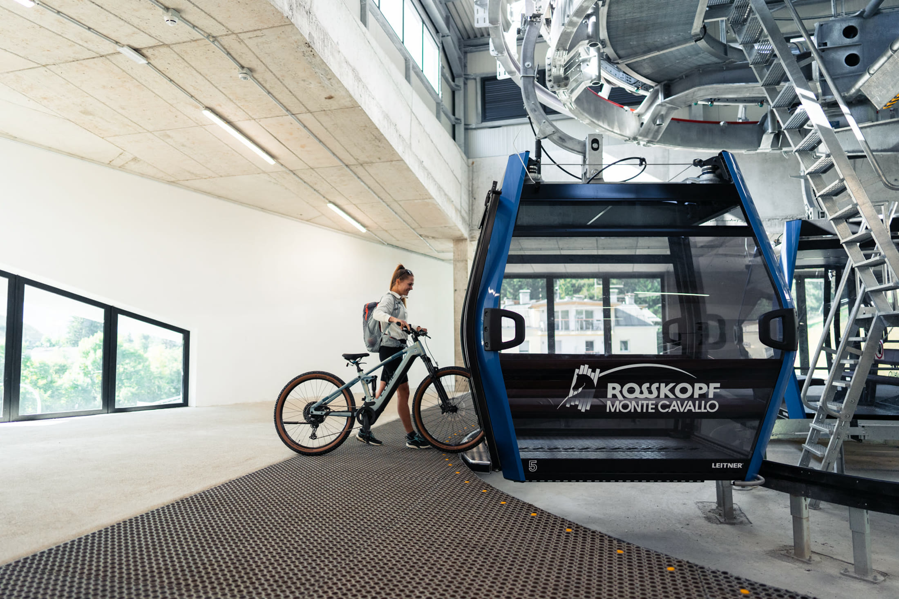
Sterzing liegt an der Radroute Brenner–Bozen und damit direkt auf einer der bekanntesten Nord-Süd-Verbindungen durch Südtirol. Perfekt für Gravelbike und Rennrad: vom Brenner hinunter durch das Wipptal, weiter Richtung Brixen und Bozen oder als Zwischenstopp auf einer längeren Transalp- oder Alpencross-Tour. Und mittendrin wartet der Lahnerhof als entspannter Zwischenstopp für eine Nacht oder gleich mehrere Urlaubstage.
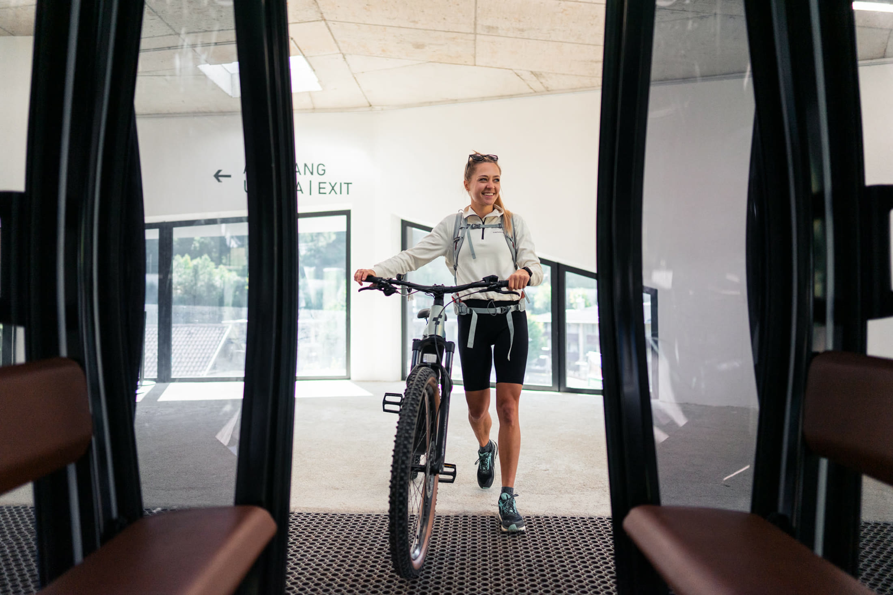
Ratschings, Ridnaun, Pfitsch, Pflersch, Rosskopf und die Bergwelt rund um Sterzing bieten unzählige Möglichkeiten für Mountainbike- und E-Bike-Touren. Direkt vom Lahnerhof führt beispielsweise eine abwechslungsreiche Tour über Thuins zur Freundalm und weiter in Richtung Telfer Almen und Rosskopf. Ob gemütliche Almrunde oder sportlicher Anstieg: Hier findet jeder die passende Herausforderung.
Nicht jeder Bikeurlaub muss aus möglichst vielen Höhenmetern bestehen. Im Tal rund um Sterzing gibt es auch entspannte Radwege und familienfreundliche Strecken. Gemeinsam durch Wiesen und Dörfer radeln, unterwegs eine Pause einlegen und die Region ganz ohne Leistungsdruck entdecken. So wird der Bikeurlaub auch mit Kindern zum gemeinsamen Erlebnis.
Klare Bergluft, aktive Tage und entspannte Stunden mit Blick auf die Berge: Im Lahnerhof verbinden Sie Ihren Bikeurlaub mit den bewährten Inklusivleistungen des Hauses.
Morgens klare Bergluft, tagsüber Kilometer und Höhenmeter sammeln und am Abend mit Blick auf die Berge entspannen. So fühlt sich der Bike-Herbst in Südtirol an.Hotel Lahnerhof · Bikehotel Sterzing · Südtirol
Nach einem Tag auf dem Mountainbike, Gravelbike oder E-Bike wartet im Lahnerhof Ihr persönlicher Rückzugsort. Unsere Zimmer und Suiten verbinden Südtiroler Gemütlichkeit mit modernem Komfort und bieten genügend Raum, um nach einer langen Tour zur Ruhe zu kommen.
Im Lahnerhof gehört zu einem gelungenen Bikeurlaub auch das Danach.
Bikeraum
Sicherer Platz für Ihr eigenes Fahrrad während des Aufenthalts.
E-Bike-Verleih
E-Bikes können direkt im Lahnerhof gegen Aufpreis ausgeliehen werden.
Geführte E-Bike-Tour
Einmal wöchentlich geht es im Sommer gemeinsam mit Gastgeber Gerhard auf Tour.
Halbpension
Reichhaltiges Frühstück und 4-Gänge-Genussmenü am Abend.
Panorama-Außenpool
Beheizter Außenpool mit Blick auf die Südtiroler Bergwelt.
Wellness & Sauna
Finnische Sauna, Bio-Sauna und Ruheraum für die Regeneration nach der Tour.
activeCARD Sterzing
Kostenlose Nutzung der öffentlichen Verkehrsmittel in Südtirol sowie weitere Ermäßigungen und Vorteile in der Region.
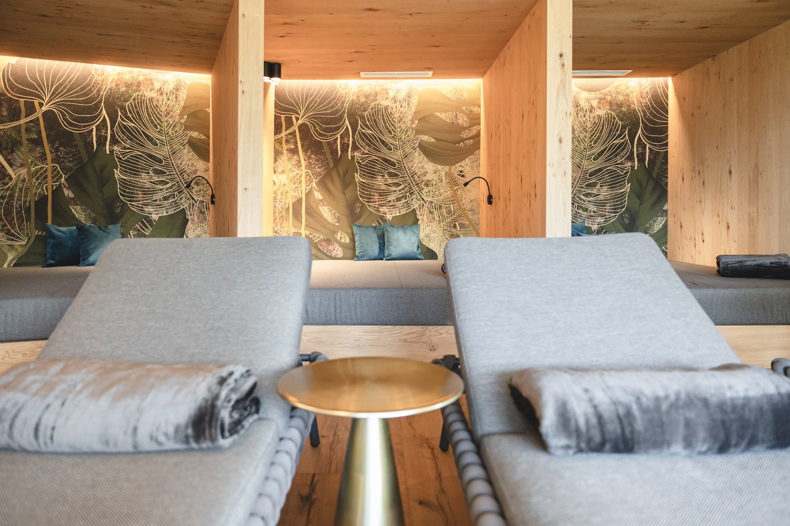
Forstwege, Almstraßen und sportliche Anstiege warten rund um Rosskopf, Ratschings, Ridnaun und Pfitsch.
Mit elektrischer Unterstützung werden auch längere Touren und höher gelegene Almen zum entspannten Erlebnis. E-Bikes gibt es direkt im Lahnerhof zu leihen.
Asphalt, Nebenstraßen, Forstwege und lange Distanzen: Die Lage am Brenner macht Sterzing zu einem spannenden Ausgangspunkt und Zwischenstopp für Gravel-Fans.
Brennerpass, Jaufenpass, Penser Joch und zahlreiche weitere Alpenstraßen machen die Region auch für ambitionierte Rennradfahrer interessant.
Wer es gemütlicher mag, entdeckt Sterzing und das Wipptal auf Talradwegen und familienfreundlichen Strecken.
Nach einem aktiven Tag wartet im Lahnerhof die wohlverdiente Regeneration mit Pool, Sauna, gutem Essen und ganz viel Ruhe.
Vom entspannten Familienausflug bis zur alpinen Passrunde.
Entspannt durchs Tal, durch Wiesen und Dörfer.
Aussichtsreiche Almstraßen und sportliche Anstiege.
Die bekannte Nord-Süd-Route durch das Wipptal.
Höhenmeter sammeln zwischen Brenner und Alpenpässen.
Die vier Strava-Links bzw. Karten können in diesen Bereich eingefügt werden, sobald die Touren vorliegen.
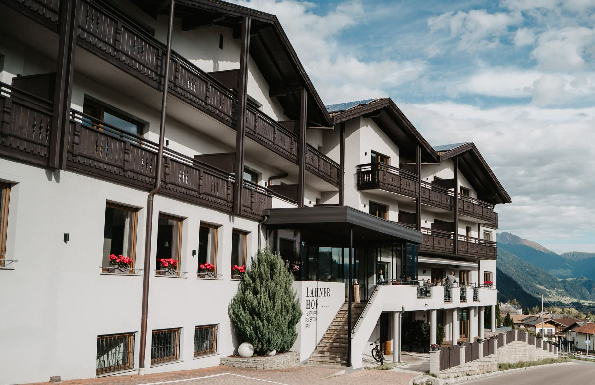
Vom Brenner Richtung Süden gehört Sterzing zu den schönsten Zwischenstopps entlang der Route. Wer auf einer längeren Rennrad-, Gravel- oder Alpencross-Tour unterwegs ist, findet im Lahnerhof oberhalb von Sterzing den passenden Ort für eine Pause.
Bike sicher abstellen, Beine im Pool lockern, gut essen, ausschlafen und am nächsten Morgen gestärkt weiter Richtung Süden fahren. Oder Sie bleiben einfach ein paar Tage länger und entdecken die Bike-Touren rund um Sterzing.
Zwischenstopp anfragenAlpine Trails, ruhige Talwege, aussichtsreiche Almstraßen und lange Touren Richtung Süden: Entdecken Sie die Vielfalt des Bikeurlaubs rund um den Lahnerhof.
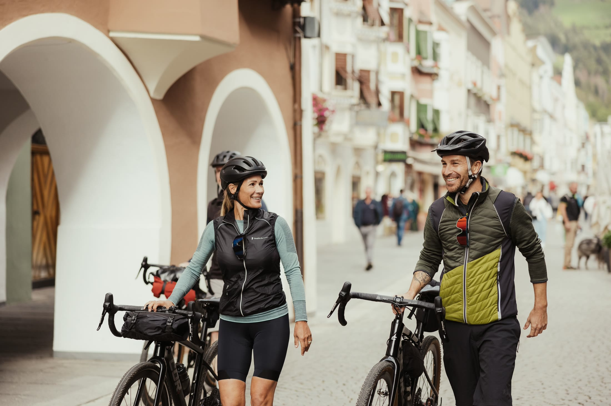
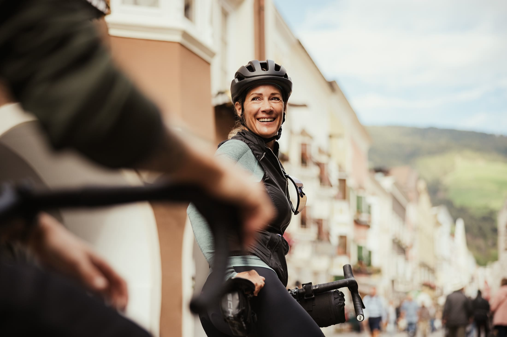
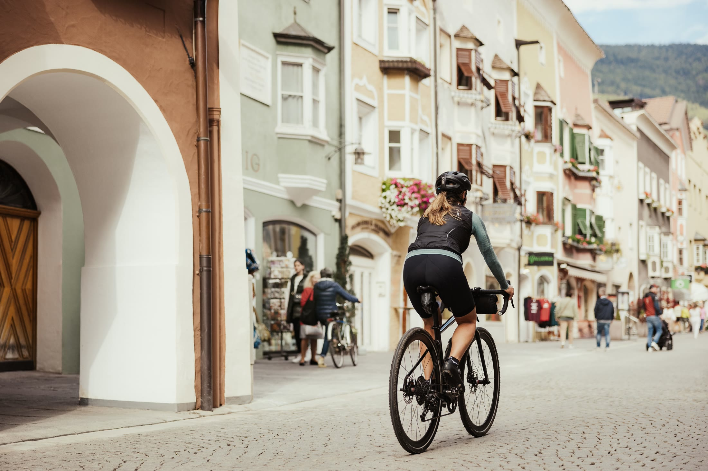
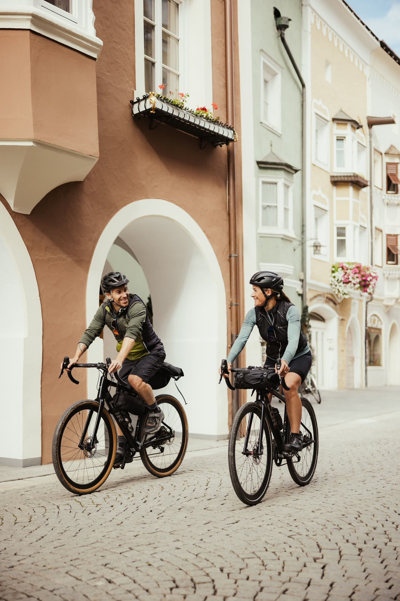
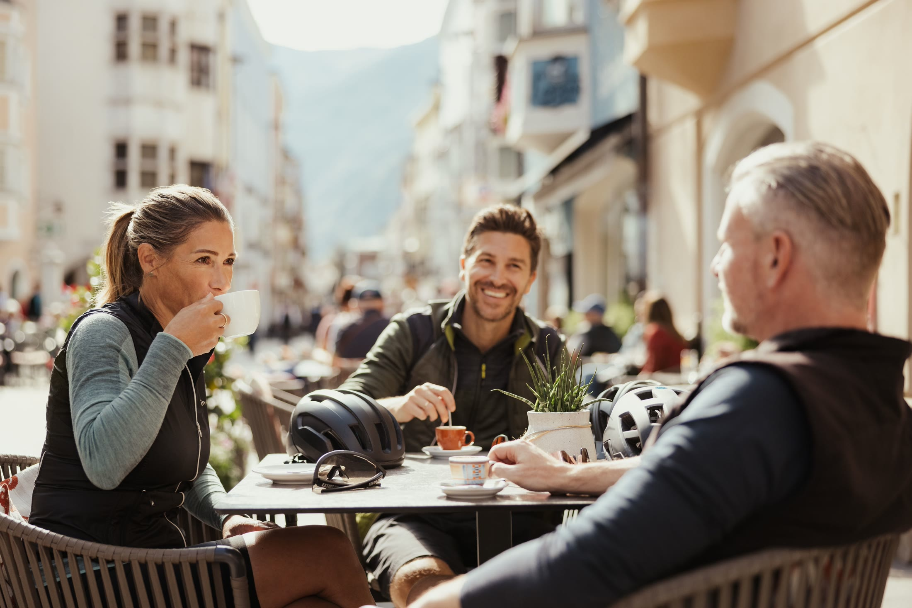
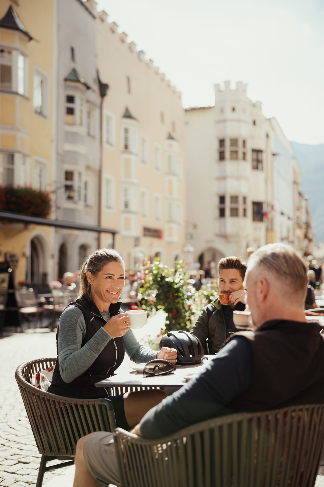
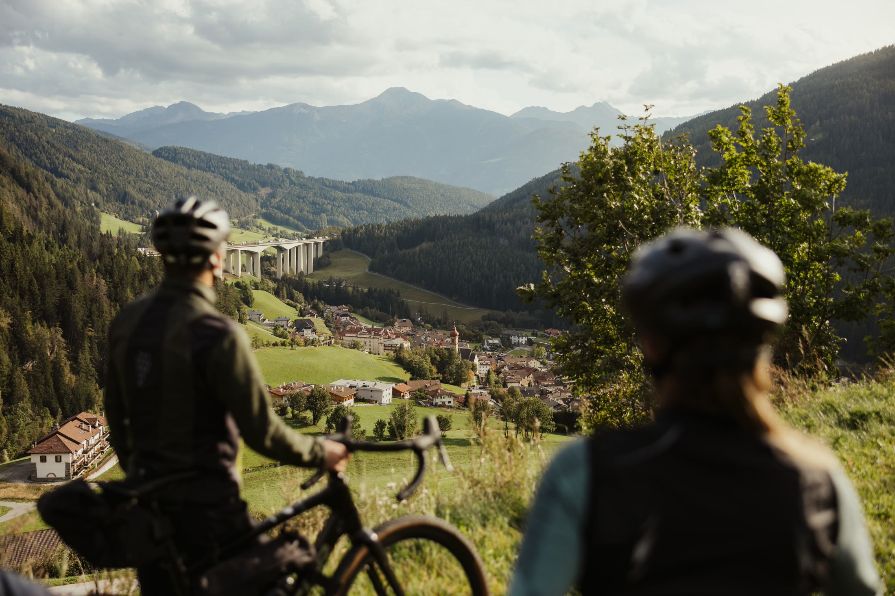
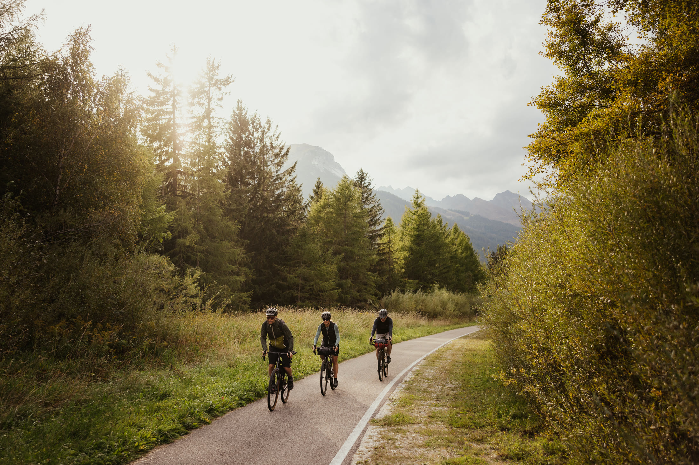
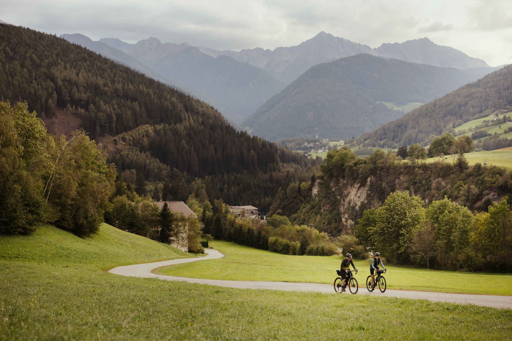
Ob Mountainbike-Wochenende, E-Bike-Auszeit, Familienurlaub mit Rad oder Zwischenstopp auf Ihrer Tour vom Brenner Richtung Süden: Senden Sie uns Ihre unverbindliche Anfrage. Wir erstellen Ihnen gerne ein persönliches Angebot für Ihren Bikeurlaub im Lahnerhof.
Prüfen Sie verfügbare Zimmer und buchen Sie Ihren Aufenthalt direkt online.